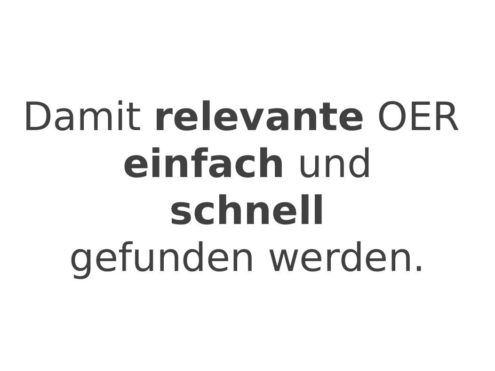
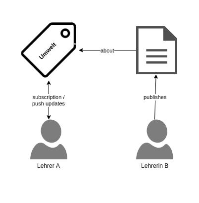

SkoHub –
normdatenbasierte Content Syndication
Adrian Pohl /
@acka47
Linked
Open Data, Hochschulbibliothekszentrum NRW (hbz), DINI AG KIM


Frankfurt am Main, 2019-06-18
Diese Präsentation:
http://slides.lobid.org/skohub-ffm/

Warum Metadaten für OER?
2015:
Herausforderung: Dezentralität des WWW
OER sind über unterschiedlichste Angebote im Web verteilt: in Repositorien, auf YouTube, Slideshare, persönlichen und institutionellen Webseiten etc.
Of the web
Jeder Ansatz zur Verbesserung der Auffindbarkeit von OER sollte den elementaren Prinzipien des WWW Rechnung tragen.
(Womit ein Repository-zentrierter Ansatz in Verbindung mit OAI-PMH herausfällt, siehe Anhang.)Wer finden will muss suchen.
Noch besser wären Push-Benachrichtigungen über relevante neue OER.
Wie wird abonniert?
Anhand welcher Merkmale sollen Push-Benachrichtigungen verschickt werden?
Lösung:
Inhalte/Themen als Kriterium für OER-Subskriptionen
Eine neue Rolle für Normdaten/Knowledge Organization Systems (KOS)
Wie könnte ein webbasierter Ansatz zur themenbasierten Subskription von OER aussehen?
URIs, URIs, URIs
URIs für OER & kontrollierte Vokabulare (mit SKOS)

Web-basierte Subskription & Benachrichtigung
(with ActivityPub)
Eine Inbox für jedes Thema

Anwendungen senden Benachrichtigungen an die Inbox

Anwendungen abonnieren eine Inbox und erhalten Push-Benachrichtigungen
Die beschriebene Infrastruktur erlaubt Anwendungen
Benachrichtigungen an die Inbox eines Themas (Schlagwort, Systematikstelle, Deskriptor) zu schicken mit Informationen über und einem Link zu einer Ressource über dieses Thema
die Inbox eines Themas (Schlagwort, Systematikstelle, Deskriptor) zu abonnieren, um in Echtzeit Push-Benachrichtigungen über neue Inhalte zu erhalten
Beispiel
Vorteile
Push- statt Pull-Ansatz
Unterstützt OER überall im Web
Der Nutzen von Normdaten/KOS wird maximiert
Die Erstellung und Pflege gemeinsamer, plattformübergreifender KOS
Anreize für OER-Produzenten, strukturierte Metadaten zu ergänzen
Das SkoHub-Projekt versucht wesentliche Lücken zu schließen, die über die Jahre im Kontext der KIM-Gruppe "OER-Metadaten" identifiziert wurden.
...diese Anforderungen sind:
Prozess & Tools zur maschinen- und menschenlesbaren Publikation kontrollierter Vokabulare
Webbasierter Metadateneditor inklusive Validierung zur Beschreibung von OER
Bonus: die beschriebene Infrastruktur zur normdatenbasierten Subskription von OER
Das SkoHub-Projekt (2019)
Infrastruktur für Inboxes & Subskription (skohub-pubsub)
Static Site Generator für SKOS-Vokabulare (skohub-ssg)
Erfassung, Verlinkung & Senden von Benachrichtigungen im Browser (skohub-editor)
Browser-basierte Subskription von Themen (skohub-deck)
Für weitere Informationen siehe SkoHub-Beiträge im lobid-Blog.

Der Repository-Ansatz

Pflegeaufwand
Erstellung & Pflege einer Liste von Quellrepositorien
Ausschau nach neuen relevanten Quellrepositorien
Anpassung des Crawalers, wenn Schnittstellen (URLs, Formate etc.) sich ändern
Normalisierung der Daten aus den unterschiedlichen Quellen
Schwachpunkte des Repo-Ansatzes
Deckt nur OER in Repositorien, nicht aus anderen Webquellen ab
Daten sind häufig lückenhaft und ohne Verschlagwortung
"Off the web"
Off the web
Conceptually, we have come to see [OAI-PMH] as repository-centric instead of resource-centric or web-centric. It has its starting point in the repository, which is considered to be the center of the universe. Interoperability is framed in terms of the repository, rather than in terms of the web and its primitives. This kind of repository, although it resides on the web, hinders seamless access to its content because it does not fully embrace the ways of the web.– Van de Sompel/Nelson 2015